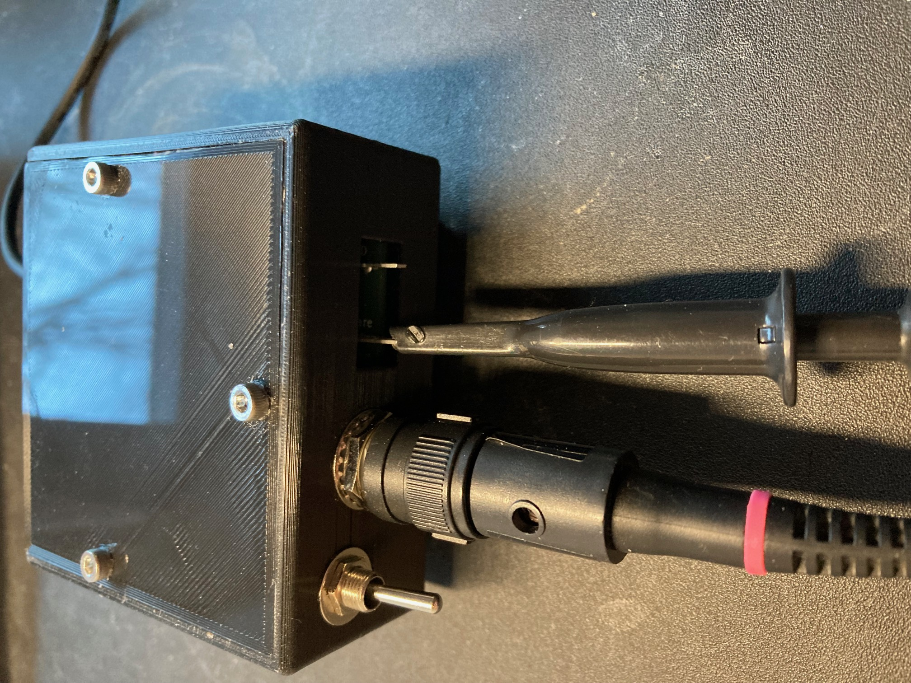
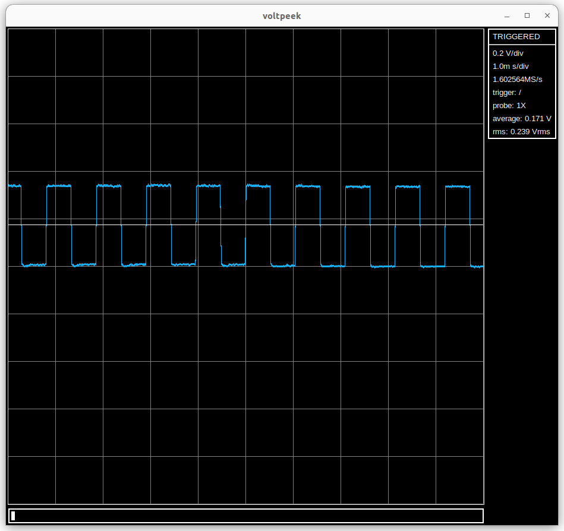

Voltpeek is instrumentation software which is used to control and display data from the NS1. For more info on voltpeek the source is available here .
A working installation of Python 3.10 or greater is needed. To check your python version, use the following command:
python3 --version
Additionally, an installation of git is needed to clone the voltpeek repository.
Run the following commands:
git clone https://github.com/schuyler4/voltpeek.git
python3 -m pip install -e voltpeek
If you are on a unix based system, you should now be able to run voltpeek with the voltpeek command.
If you are on Windows this will likely not be the case. You will have to add voltpeek to your path environment variable. However, you can run voltpeek directly from the install location with the following commands:
cd voltpeek
python3 -m voltpeek
You should also see the USB port on the back of the scope.
The NS1 is not isolated. That is, it shares a ground with whatever PC you plug it into. Keep this in mind.
The voltage limit of the NS1 is +/-10V. That is, the input voltage cannot exceed +10V, and it cannot go lower than -10V. This does not mean that you can't measure signals with greater amplitude, but probe division must be used.
The AC coupling switch will AC couple the scopes input signal. This switch should be left down unless AC coupling is desired.
In voltpeek, enter connect NS1 command. The side panel status should change from
DISCONNECTED to NEUTRAL.
Additionally, the sample rate should appear in the side panel.
If the sample rate does not appear then there may be a connection issue. Try unplugging and re-plugging on both the scope and computer side.
Now that the scope is connected, we can do some triggering. Enter the atrigger
command in voltpeek to auto trigger. This will continually retrigger the scope as fast as
possible. There is no trigger event, and the trigger will start at a random time. If nothing
is plugged into your scope input, you should get a flat line like so:
When your scope has no input signal, the line should be aligned in the center of the screen. However,
if it is not, you can use the cal command to recalibrate your scope offsets (When you do this calibration,
make sure nothing is connected to the signal input). When you are done
auto triggering use the stop command to stop the scope.
The NS1 has a square wave generator built into its front panel for calibration and test purposes. To look at this signal, attach your probe as shown. The ground lead is not necessary as the square wave generator is already referenced to the scope ground. To start, make sure your probe is set to 1X mode. This is done with the switch on the side.
 If you atrigger again, you should see a waveform similar to the following:
You have probably noticed that the waveform appears to be flying across the graticule. This will be fixed soon enough when we start normal triggering.
To zoom in on your waveform either horizontally or vertically, use the scale command.
This will put voltpeek into adjust mode. This is indicated in the command input.
Once in adjust mode you can use various keys to zoom in vertically or horizontally. To zoom in
and out horizontally you can use h and l, respectively. To zoom in and
out vertically use j and k respectively. You can do this zooming while
the auto triggering is active for immediate update. Once you are done zooming, you can use either
ctrl-c or esc, to exit adjust mode.
Now we will set up normal trigger, so we get a stable waveform. First, make sure auto trigger is not running.
Use stop command if it is. However, it is useful to have a reference waveform showing.
First, let's set the trigger level. This is done with the triglevel command.
Using the triglevel command will put voltpeek in adjust mode again. Like with vertical adjustment,
the trigger level can be adjusted with j and k. Additionally, for courser adjustment, ctrl-u and
ctrl-d can be used. You will see a white line appear for your trigger level. This can be adjusted to trigger
on a rising edge of your square wave like so:
Once your trigger level is adjusted where a rising edge can cross it, you can use ctrl-c or esc
to exit adjust mode and set the trigger level. To run the normal trigger use the ntrigger command. You
should now get a stable waveform with the rising edge in the center of the graticule like shown. You can zoom in and
out on the rising edge if you adjust the scale while normal trigger is running. Like auto trigger, use the stop
command to stop the normal trigger updates. You can also use the trigfalling command to switch to a falling
edge trigger, and trigrising to switch back to a rising edge trigger.
So far we have been using the scope and probe in 1X mode. Let's try 10X mode. To start, switch your probe to its 10X position. This will form a voltage divider using the probes impedance, and the input impedance of the scope. At DC, this voltage divider will attenuate the measured signal so it is divided by 10 at the input of the scope. For this to hold across the scopes bandwidth, this division ratio must be constant across frequency. This is where probe compensation comes in. After zooming in on your 10X square wave signal, trigger on it and observe the waveform. Below are examples of over compensated and under compensated waveforms.
Adjust the small screw on your probe input so that the square wave appears approximately flat:

If you would like the readout to reflect the 10X division, you can use the probe10 command. And the probe1
command will switch it back.
Cursors can be used to analyze time and voltage deltas in your waveform. First, make sure the scope is stopped with a
waveform showing. You can then toggle the vertical cursors with togglevcurs, the horizontal cursors with
togglehcurs, and both with togglecurs. Ones cursors are toggled, you can select specific cursors using the
nextcurs command. The selected cursor will appear as a dashed line. To adjust the selected cursor use the adjustcurs
command. Like with previous adjustments, fine vertical adjustments can be made with j and k, course
vertical adjustments can be made with ctrl-u and ctril-d, and find horizontal adjustments can
be made with h and l. Additionally, course horizontal adjustments can be made with <
and >. Exiting adjustment is the same, ctrl-c or esc.
When using your scope to observe a waveform, make sure you are vertically zoomed in on the waveform for it to fill as much of the screen as possible. This way you are utilizing more of the scopes resolution. That being said, make sure you don't over range the scope. This is an undefined state as parts of the waveform is missing and the scopes circuitry is out of its nominal operating range.
Also you may observe slow oscillations especially when on a low range, or say, holding onto the probe tip. This is likely 60Hz interference, for obvious reasons, 60Hz interference is quite prevalent in most environments where an oscilloscope is used.